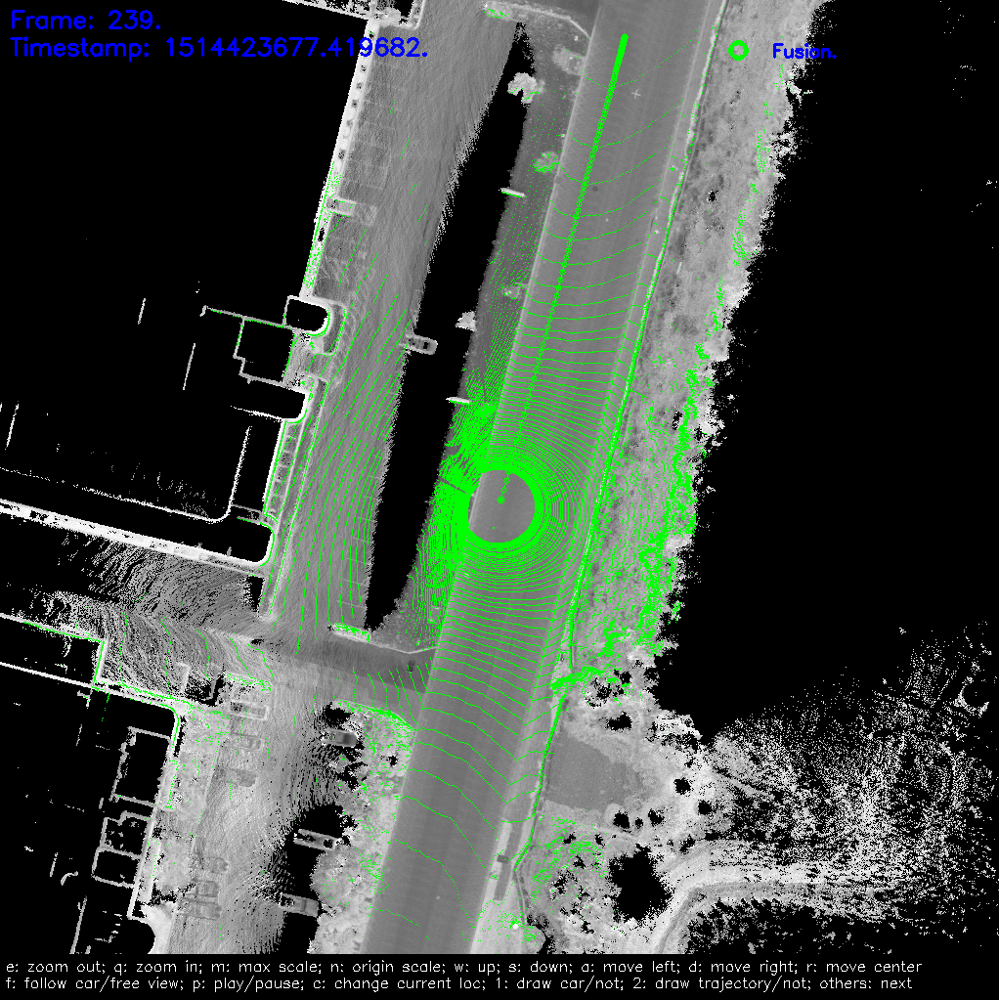

How to Run NDT Localization Module On Your Local Computer¶
1. Preparation¶
Follow the instructions in Apollo Software Installation Guide
Download localization data from Apollo Data Open Platform（US only)
the localization data is a experimental dataset to verify the availability of
localization. It contains localization map(ndt_map/), vehicle params(params/),
sensor recording data(records/). The specific attributes are as follows:
duration: 5 mins
mileage: 3km
areas: city roads in Sunnyvale
weather: sunny day
2. Configuring Parameters¶
Assume that the path to download localization data from is DATA_PATH.
2.1. Configure Sensor Extrinsics¶
NDT localization module use the same params path as msf localization module.
cp DATA_PATH/params/ant_imu_leverarm.yaml /apollo/modules/localization/msf/params/gnss_params/
cp DATA_PATH/params/velodyne64_novatel_extrinsics_example.yaml /apollo/modules/localization/msf/params/velodyne_params/
cp DATA_PATH/params/velodyne64_height.yaml /apollo/modules/localization/msf/params/velodyne_params/
Add config of sensor extrinsics in
/apollo/modules/localization/conf/localization.conf to overwrite the default
value.
# The lidar extrinsics file
--lidar_extrinsics_file=/apollo/modules/localization/msf/params/velodyne_params/velodyne64_novatel_extrinsics_example.yaml
The meaning of each file
ant_imu_leverarm.yaml: Lever arm value
velodyne64_novatel_extrinsics_example.yaml: Transform from IMU coord to LiDAR coord
velodyne64_height.yaml: Height of the LiDAR relative to the ground
2.2. Configure Map Path¶
Add config of map path in /apollo/modules/localization/conf/localization.conf
# Redefine the map_dir in global_flagfile.txt
--map_dir=DATA_PATH
This will overwrite the default config defined in global_flagfile.txt
2.3 Configure Topic Name¶
For different LIDAR sensor, Apollo may has different LIDAR topic name. So set
the right lidar topic name in
/apollo/modules/localization/conf/localization.conf to overwrite the default
value.
# The pointcloud topic name.
--lidar_topic=/apollo/sensor/velodyne64/compensator/PointCloud2
[optional] if you want to visualize localization result, you should also modify
the LIDAR topic name in
/apollo/modules/localization/dag/dag_streaming_msf_visualizer.dag
channel: /apollo/sensor/velodyne64/compensator/PointCloud2
3. Run the multi-sensor fusion localization module¶
run the script in apollo directory
./scripts/ndt_localization.sh
This script will run localization program in the background. You can check if the program is running by using the command.
ps -e | grep "ndt_localization"
In /apollo/data/log directory, you can see the localization log files.
localization.INFO : INFO log
localization.WARNING : WARNING log
localization.ERROR : ERROR log
localization.out : Redirect standard output
localizaiton.flags : A backup of configuration file
4. Play record bag¶
cd DATA_PATH/bag
cyber_recorder play -f *.record
Open another ternimal and log in the docker environment, then execute:
cyber_monitor
It will display a topic list in which you can see topic
/apollo/localization/pose
5. Record and Visualize localization result (optional)¶
Record localization result¶
python ./scripts/record_bag.py
Visualize Localization result¶
NDT localization module use the same visualization tools as MSF localization module.
./scripts/localization_online_visualizer.sh
First, the visualization tool will generate a series of cache files from the localization map, which will be stored in the apollo/data/map_visual directory.
Then it will receive the topics blew and draw them on screen.
/apollo/sensor/velodyne64/compensator/PointCloud2
/apollo/localization/pose
If everything is fine, you should see this on screen.

6. Stop localization module¶
You can stop localizaiton module by
./scripts/ndt_localization.sh stop
If you record localization result in step 5, you will also need to end the recording process:
python ./scripts/record_bag.py stop
7. Verify the localization result (optional)¶
NDT localization module also use the same evaluation scripts as MSF localization
module. First, rename the recording file with suffix .record.
./scripts/msf_local_evaluation.sh OUTPUT_PATH ANT_IMU_PATH
OUTPUT_PATH is the folder stored recording bag in step 5, and ANT_IMU_PATH is the file stored lever arm value.
This script compares the localization results of NDT mode to RTK mode.
(Aware that this comparison makes sense only when the RTK mode runs well.)
And we can get the statistical results like this

It only has one statistical data which is the localization result. Other result as in MSF mode will not show.
The meaning of each row in the table
error： the plane error, unit is meter
error lon： the error in the car’s heading direction, unit is meter
error lat： the error in the car’s lateral direction, unit is meter
error roll： the roll angle error, unit is degree
error pit： the pitch angle error, unit is degree
error yaw： the yaw angle error, unit is degree
The meaning of each col in the table
mean： evaluation value of the error
std： the standard deviation of the error
max： the maximum value of the error
< xx： percentage of frames whose error is smaller than the indicated range
con_frame()： the maximum number of consecutive frames that satisfy the conditions in parentheses